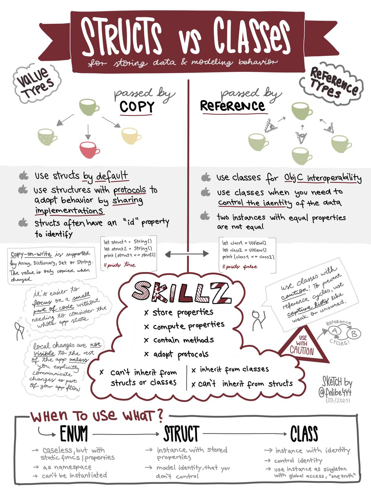
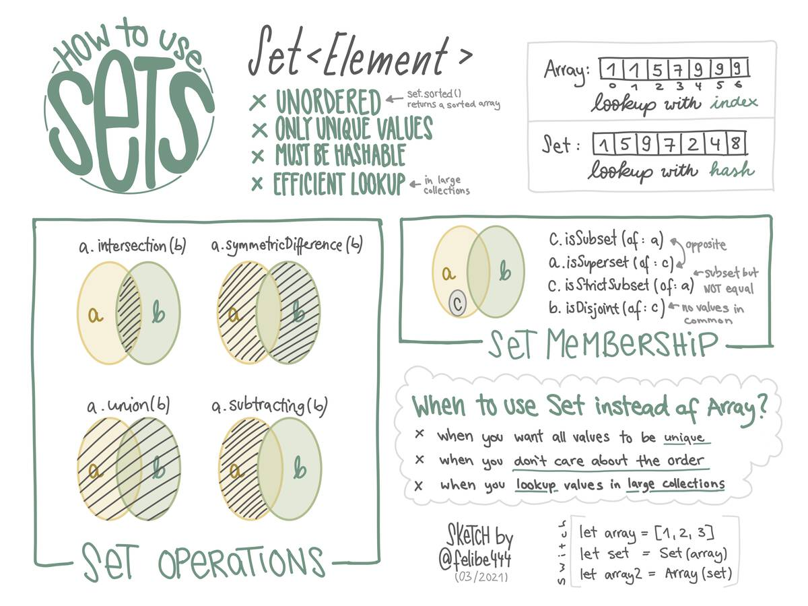
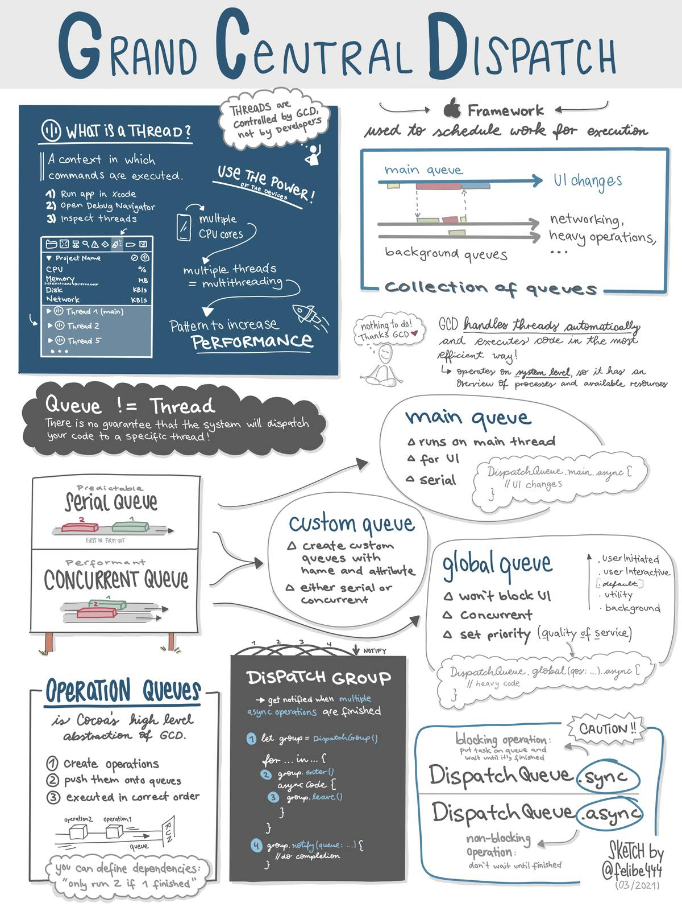
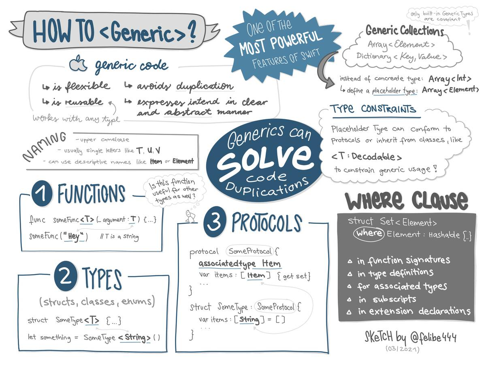
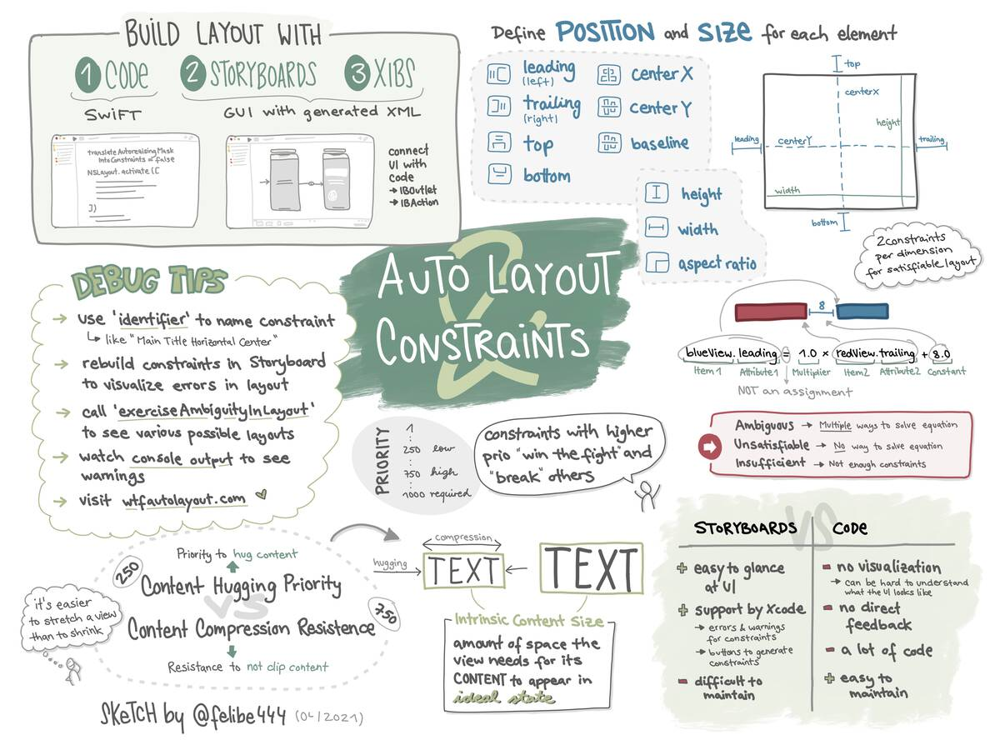

Mar 15, 2021 ⋅ 5 min read
Sketchnote Summaries of possible iOS Interview Topics
After my first technical interviews in years, I have found that it's always a good idea to refresh your knowledge and prepare for technical interview questions (who would've thought) 😅 Although I knew what the questions were about, I found it difficult to talk about details and explain topics spontaneously. To be less freaked out when an interviewer asks me about capture lists or memory management in Swift, I wanted to make some sketchnotes on possible interview topics. They would be perfect as a summary. And if they help me, maybe they'll help you too.
Topics
I asked on twitter for possible interview topics. On my list are currently the following:
- Swift Evolution (done ✅)
- Structs vs Classes (done ✅)
- Sets (done ✅)
- Grand Central Dispatch / Concurrency / OperationQueue (done ✅)
- Generics (done ✅)
- Auto Layout and Constraints (done ✅)
- Messaging Patterns (KVO / Delegate / Notification / Observer)
- Closures
- Core Graphics
- Extensions
- SwiftUI Data Flow
- Memory Management with ARC
Disclaimer: The list of topics isn't exhaustive. I have no idea what your interviewers will ask you about in your interviews. But this is an overview about the most common topics. (More iOS Interview Questions at GitHub by raywenderlich.com or at Hacking With Swift)
Now, I'll walk you through the sketchnotes I have created as part of my preparation and add some additional links to them for your further studies. There will be more sketchnotes in the next days/weeks. But I won't have time to create sketchnotes for every single topic.
Swift Evolution
(added on 15th of March 2021)
Let's start with the evolution of Swift. I started with iOS development shortly before the release of Swift 2 – it was in 2015.
Creating this sketchnote was especially fun because I could look back at the features which were added step by step. I had almost forgotten that there was a time when Swift had no guard statement or try and catch. I don't miss it 😉
Additional links
- 🔎 See this sketchnote in full resolution
- The History of Swift on Wikipedia
- I can recommend all "What's new in Swift..." articles by Paul Hudson where the most important changes for each Swift version are explained. You can find them on Hacking With Swift.
{kind=link}
Structs vs Classes
(added on 16th of March 2021)
"Structs vs Classes" is a real classic in interviews.
It was a bit difficult to focus on the most important things here. I have two more pages of notes about capture lists and memory management in Swift. Maybe I add both topics to the list and make own sketchnotes for them or I can combine the topics with another topic. Let's see.
So, this sketchnote contains (in my opinion) the most important differences between Structs and Classes in Swift, with some additional thoughts and a small chart about when (and why) to use an Enum, a Struct or a Class.
Additional links
- 🔎 See this sketchnote in full resolution
- Choosing Between Structures and Classes from Docs
- Swift Docs: Classes and Structs
- Capture Lists by Scott Gardner
- I love this gif with the two cups of coffee to visualize reference and value types
- In Depth Optimization Tip: Use copy-on-write semantics for large values
{kind=link}
Sets
(added on 17th of March 2021)
I know Sets can be really powerful, but I always forget how the set operations are called and what they mean. That's the reason why "How to use Sets" was a topic from which I always wanted to make a sketchnote to have a quick reference.
Additional links
- 🔎 See this sketchnote in full resolution
- Swift Docs: Collection Types, section about Sets
- When to use a set rather than an array on Hacking With Swift
- Swift Docs: Introducing Swift Collections an open-source package with new collection types like
Deque,OrderedSet,OrderedDictionary(Since 5th of April)
{kind=link}
Grand Central Dispatch / Concurrency / OperationQueue
(added on 18th of March 2021)
Puuuh, creating this sketchnote was really time-consuming and exhausting. There's a lot going on in it, but I tried to make containers to group content and connect it with arrows when needed. It's just a huge topic, or rather it's a lot of topics that have to do with each other!
Do you know the difference between threads and queues? Well, to be honest, it wasn't clear to me before I made the sketchnote. So, I'm glad I learned something new!
Additional links
- 🔎 See this sketchnote in full resolution
- Dispatch Framework from Docs
- Operation Queue from Docs
- How to make one operation wait for another to complete using addDependency() on Hacking With Swift
- Project 9: Grand Central Dispatch on Hacking With Swift
- Threads, Queues, and Concurrency on Cocoacast
- Grand Central Dispatch on Swift by Sundell
- Swift Evolution Proposal about "Actors"
- UIKonf 2020: The Multi-Threaded Asynchronous Parallel World of Swift by Leo Dion
{kind=link}
Generics
(added on 26th of March 2021)
Generics are an abstract way to solve code duplication. I think the "abstraction" might be one reason why I sometimes have trouble understanding generic code. Even though generics can make the code more flexible and reusable, remember that it can also make the code harder for others to understand.
Additional links
- 🔎 See this sketchnote in full resolution
- Swift Docs: Generics
- What are generics? on Hacking With Swift
{kind=link}
Auto Layout and Constraints
(added on 6th of April 2021)
How do you build your UI? Layout-in-code vs Storyboards is one of the most controversial topics in iOS development. This sketchnote contains a summary of how to use Auto Layout, constraints and equations, some debugging tips, what's intrinsic content size and Content Hugging vs Content Compression Resistence Priority. And of course it also contains some arguments for the disussion Layout-in-code vs Storyboards.
Additional links
- 🔎 See this sketchnote in full resolution
- Documentation: Auto Layout Guide
- WWDC18 - High Performance Auto Layout
- Auto Layout in Swift: Writing constraints programmatically on SwiftLee
{kind=link}